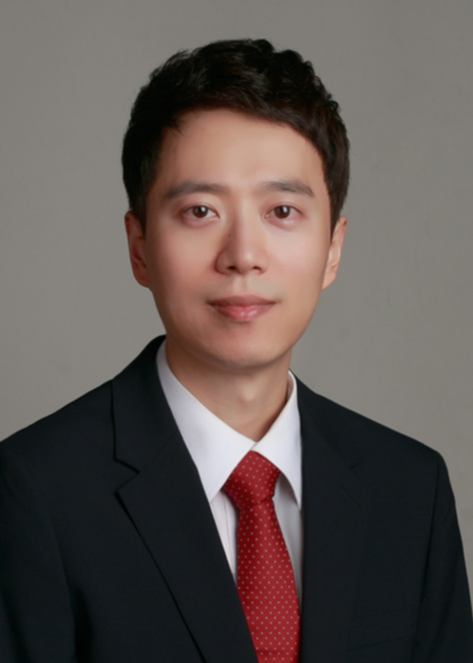
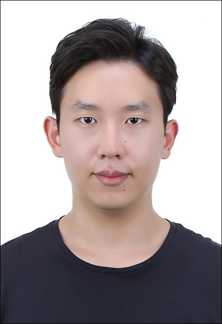
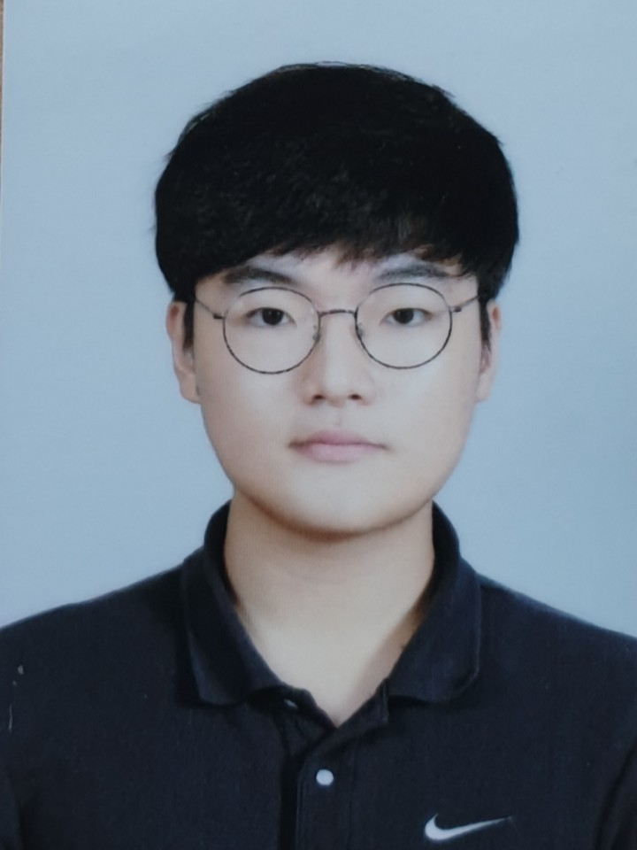
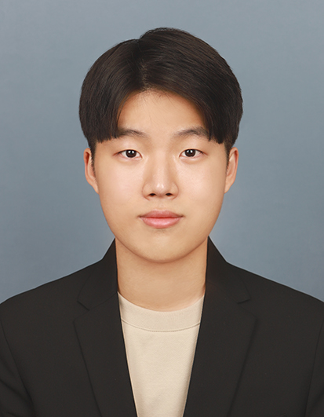
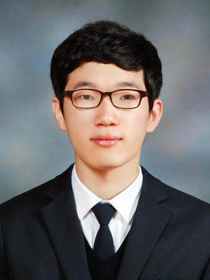
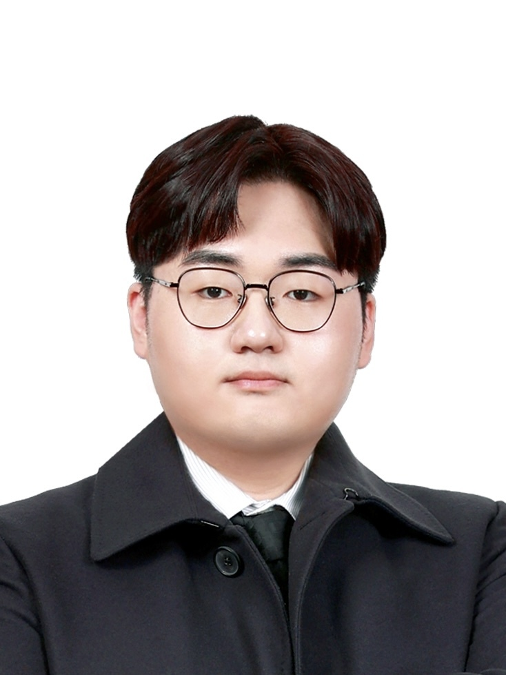
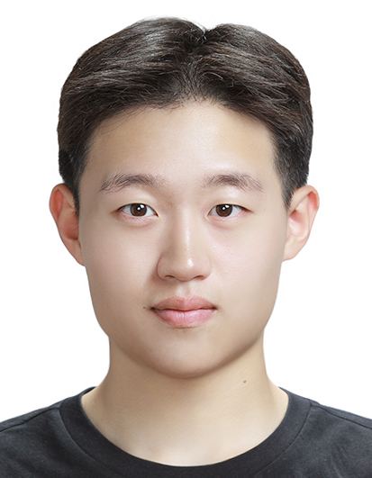

참여 연구진
서울대학교와 포항공과대학교의 5개 연구실, 2개 기업이 참여합니다.
연구책임자

공동연구자
참여연구원
서울대학교 머신러닝 연구실 (송현오)

문승용
이덕재
김진욱
김영인
염준영
추시훈
서울대학교 아키텍처 및 코드 최적화 연구실 (이재욱)
- 이승렬
- 박리해
- 권상우
- 임근수
서울대학교 시각 및 학습 연구실 (김건희)
- 송석원
- 안재우
- 정진서
- 구준서
- 김현수
- 김준서
- 최세연
- 문지환
- 박건희
- 이태현
- 오예림
- 남윤지
- 박민수
- 김소현
- 박은규
- 우승윤
서울대학교 컴퓨터 구조 및 시스템 연구실 (심재웅)
- 이준서
- 최관석
- 이준기
- 이원범
- 조재훈
- 이석원
- 박준용
- 전상윤
포항공과대학교 멀티모달 통합지능 연구실 (모상우)
- 김명수
- 조은찬
- 장승현
- 이수찬
㈜노타
- 이요한
- 신휘명